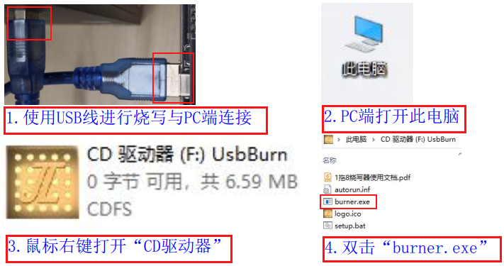
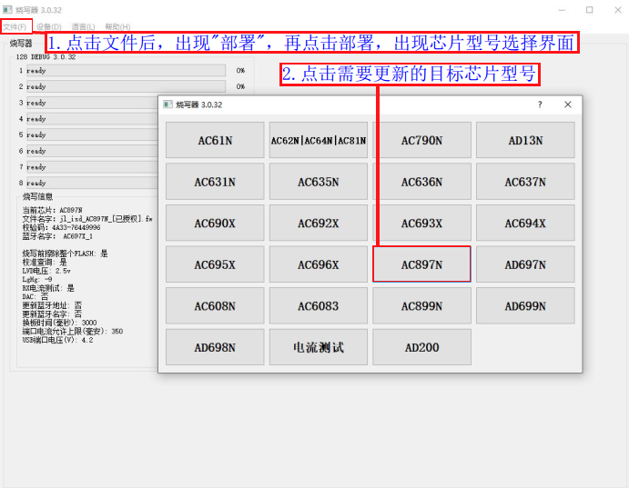
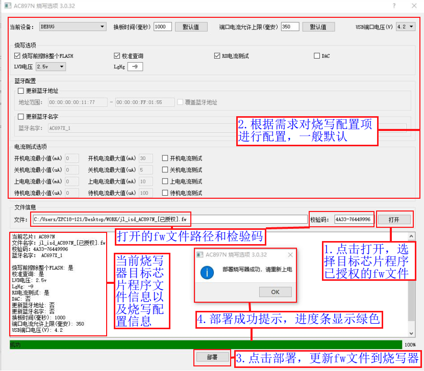
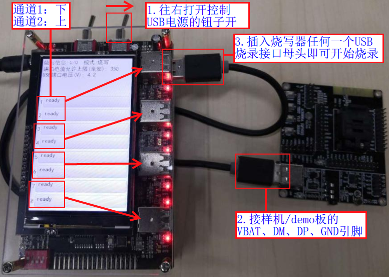
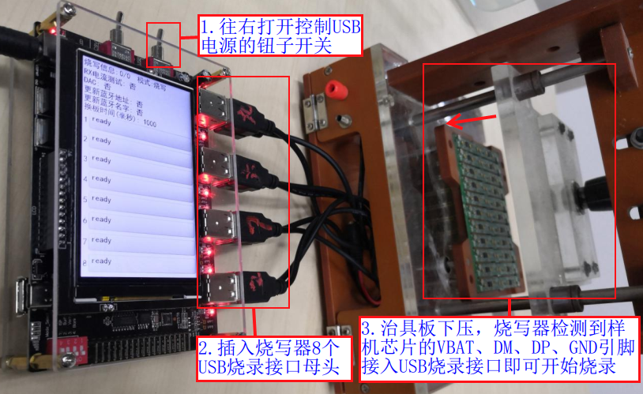
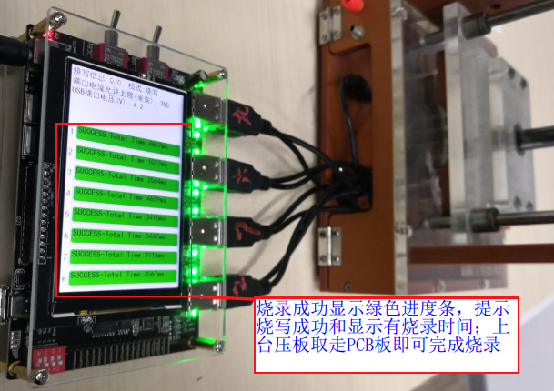

2.2. Manual Programming, Verification and Blank Check
2.2.1. Preparing the programming environment
Materials to prepare for programming:
Category |
Description |
Quantity |
|---|---|---|
PC |
1. To upgrade the programmer firmware to the required version or the latest version |
N units |
Programmer main unit |
Controls chip programming |
1 |
USB data cable |
1. Connects the programmer to a PC to upgrade the programmer firmware |
N cables |
Power adapter |
Use a power supply rated 9.0V, 2.0A or higher to power the programmer |
1 |
Fixture |
Used with N programmers to batch-program N*8 devices simultaneously |
1 |
Device |
1. A single device or development board can be programmed; |
N |
Chip firmware to be programmed |
Prepare the fw file built by the SDK that you want to program (it includes the key file); |
1 |
2.2.2. Power on the programmer
Powering the programmer
The programmer is powered by a 9V power adapter. The power wiring is shown in Programmer power supply wiring diagram.

Programmer power supply wiring diagram
Power on the programmer
The programmer is shipped with the firmware that controls its operation already programmed, so you can power it on as soon as you receive it. After connecting the power supply, follow the steps shown in Power-on screen:
[1] Flip the "main power toggle switch": right is on, left is off;
[2] After power-on, the "power indicator light" and the "8 programming channel status indicator lights" light up;
[3] The LCD display shows the "startup screen" for 3 s, and then the "programming information" and the "waiting-for-programming screen";

Power-on screen
2.2.3. Checking and updating the programmer firmware version
The programmer firmware is the firmware of the main control chip that controls the operation of the whole programmer. Before programming target chip firmware, be sure to check whether the current programmer firmware is the latest version (except in special cases); otherwise some programming problems may occur.
Checking the current programmer version
When the programmer is powered on, it displays the startup screen for 3 s. This screen includes the programmer firmware version number (the screen for updating the target chip firmware also includes the programmer firmware version number), as shown in Startup screen.

Startup screen
Regularly check for new versions and update the programmer firmware
If the firmware version currently used by the programmer is outdated, the PC tool window for updating the target chip fw file shows a corresponding update prompt. If new firmware is available, update it promptly.
In the PC tool control panel for remote upgrade of the programmer firmware, you can get the latest 3 programmer firmware version numbers and select the version you need for the upgrade. For the upgrade steps, see the "Remote Upgrade of the Programmer Firmware" section.
2.2.4. Update the target chip firmware on the programmer
2.2.4.1. Update notes
Before programming, verifying or blank-checking chips, you need to update the programmer with the programming firmware for the target chip, that is, the fw or ufw file built by the SDK, or the key file. During programming, the programmer programs this firmware into the target chip, or uses it for verification and blank check. If the programmer has already been updated with the corresponding firmware, skip the steps in the following subsections.
2.2.4.2. Open the PC tool control panel
After the programmer is powered on, proceed as shown in Open the PC tool control panel:
[1] Use a USB data cable to
connect the programmer's USB update port to a USB port on the PC(note: on the programmer side, plug the cable into the USB update port, not into one of the 8 USB programming ports);[2] Open
This PCon the PC and find theCD Drive;[3] Right-click the "CD Drive" and open it; you will see the
burner.exefile, the user manual and other files;[4] Double-click
burner.exeto open the PC tool control panel shown in PC tool control panel (in step 4 you can also open it directly by double-clicking the "CD Drive" with the left mouse button);

Open the PC tool control panel

PC tool control panel
Important
Be sure to power on the programmer first, and only then use the USB cable to "connect the programmer to the PC" to update the firmware. If you update the firmware directly over USB, the USB power supply may be too weak and the update may fail.
2.2.4.3. Selecting the target chip model to program
The following demonstrates updating the fw programming file for an AC897N chip. After opening the PC tool control panel, do the following:
[1] Click "File" (文件) -> "Deploy" (部署); the target chip model selection window shown in Target chip model selection window opens;
[2] Click the corresponding chip model (AC897N here); the firmware deployment window shown in Deploying the fw programming file to the programmer opens.

Target chip model selection window
2.2.4.4. Selecting and deploying the programming file to the programmer
After the firmware deployment window opens, follow the steps shown in Deploying the fw programming file to the programmer:
[1] Click "Open" (打开) and select the authorized fw file to deploy (a ufw file or key file can also be used; fw/ufw files must be authorized before they can be programmed with the 1-to-8 programmer. See the "Authorized Programming Count Limit" section to learn about this feature and authorize the fw file)
[2] Select the chip programming options (usually the defaults; to configure them as required, see the "PC-Side Programming Options for Each Chip Model" section);
[3] Click the "Deploy" (部署) button to deploy the FW file, i.e. the target chip programming firmware, to the programmer;
[4] When the deployment succeeds, the message "Programmer deployed successfully, please power-cycle" (部署烧录器成功，请重新上电) appears. Click OK, then power-cycle the programmer (unplug the USB data cable from the programmer, then flip the "main power toggle switch" to the left to turn the power off and back to the right to turn it on);

Deploying the fw programming file to the programmer
Note
fw/ufw files must be authorized before they can be programmed with the 1-to-8 programmer
If the error "Error: No authorization information in the FW file..." (错误：FW文件中没有授权信息…) appears during deployment, authorize the fw file as described in the "Authorized Programming Count Limit" section.
If the deployment fails for another reason, a corresponding error message is also shown. Use the message to find the cause of the error, then deploy again. If the deployment keeps failing or there is a problem you cannot solve, contact Jieli technical support promptly.
2.2.5. Programmer working modes: introduction and setup
2.2.5.1. Introduction to the programmer working modes
Working mode |
Description |
|---|---|
Programming mode |
Programs the data of the firmware file deployed to the programmer, i.e. the .fw or .ufw file generated by the SDK build, or the .key file, |
Verification mode |
Compares the data deployed to the programmer, i.e. the .fw or .ufw file built by the SDK, or the .key file, together with lvd, |
Blank check mode |
Checks whether the chip is blank, i.e. whether .fw file firmware or key file data has already been programmed; |
Current test mode |
Tests the current drawn by the device in standby, power-off and other modes |
Note
Programming modealready includes verification: after programming, any data written to the chip is read back to verify that it was programmed correctly;
In
blank-check mode, even if the checksum of a .fw file is displayed, this does not prove that the firmware programmed into the chip is complete. The checksum displayed by the blank check is mainly used to find the .fw file that was last programmed, which makes programming files easier to manage, for example when analyzing production programming defects with the recovered .fw file.
To double-check whether the firmware programmed into the chip last time is complete and consistent with the currently deployed .fw file data and programming configuration, you must use
Verification mode;
2.2.5.2. Set and confirm the programmer working mode
Setting the working mode
The programmer working mode is set with the DIP switch on the programmer. The working mode for each DIP switch setting is shown in Programmer working mode settings.

Programmer working mode settings
Confirming the working mode
After the programmer is powered on, the programming information area of the display shows the current working mode, as shown in Working mode shown on the display.

Working mode shown on the display
2.2.6. Program the device chip firmware
2.2.6.1. Preparing for programming
Before programming the device chip firmware, make sure you have carried out the related operations in the first 4 subsections to avoid problems during programming. These operations include:
Power on the programmer before programming and wait for the ready-to-program screen (see the "Power on the programmer" subsection)
Confirm that the programmer firmware is the required version, or update it (see the "Checking and updating the programmer firmware version" section; check this from time to time)
Confirm that the target chip firmware currently in the programmer is the firmware to be programmed, or update it (see the "Update the target chip firmware on the programmer" subsection)
Confirm that the programmer's working mode is Programming mode, or set it (see the "Programmer working modes: introduction and setup" section)
Prepare the devices to be programmed, with their USB interface brought out, or the mass-production devices and the dedicated fixture.
2.2.6.2. Start programming the device chip
When the preparations for programming are complete, power-cycle the programmer and turn on the USB power toggle switch so that the programmer display is in the ready-to-program state.
When the programmer detects that a USB male connector wired to the VBAT, DM, DP and GND pins of a device chip has been plugged into a USB programming port, it starts programming the firmware of the device chip on that channel.
There are therefore two ways to program devices:
First turn on the USB power toggle switch, then plug the USB male connector wired to the VBAT, DM, DP and GND pins of the device chip into the female programming port of the programmer. Use this method to program a single device, or for press-contact programming with a fixture in mass production.
First plug the USB male connector wired to the VBAT, DM, DP and GND pins of the device chip into the female programming port of the programmer, then turn on the USB power toggle switch. Use this method when you need to program several devices at the same time outside mass production and without a fixture.
Starting programming with method 1 is illustrated in Steps to start programming a single device and Steps to start programming with a fixture.

Steps to start programming a single device

Steps to start programming with a fixture
Important
A programming fixture can be extended to press down on and contact the USB test points (VBAT, DM, DP, GND) of Nx8 devices at the same time, so that N programmers can program Nx8 device chips simultaneously.
2.2.6.3. Determining the programming result
Determining programming success
When programming succeeds, the progress bar of the corresponding channel on the display
turns greenand shows a programming-success message and the time taken. Unplug the USB cable to complete the programming, as shown in Programming success display for a single device and Successful programming with a fixture.
Programming success display for a single device

Successful programming with a fixture
Determining programming failure
When programming fails, the progress bar of the corresponding channel on the display
turns redand shows the programming failure error message, as shown in Progress bar status after a programming failure (other error types are also possible). When you unplug the USB cable, the progress bar on the display returns to normal.Progress bar status after a programming failure
Note
Once the chip has been programmed successfully, you can remove the PCBA and proceed to the next step, device assembly or functional testing. The same chip can be programmed again and again, with a different target chip firmware, different programming options, etc.
Chips that fail programming must not move on to subsequent production steps; the specific cause of the failure must be analyzed further;
For details on the status indicators and error messages, see the "Status Indicators and Error Messages" section.
2.2.7. Verify the device chip firmware
2.2.7.1. Preparing for verification
Before verifying the device chip firmware, make sure you have carried out the related operations in the first 4 subsections to avoid problems during verification. These operations include:
Power on the programmer before programming and wait for the ready-to-program screen (see the "Power on the programmer" subsection)
Confirm that the programmer firmware is the required version, or update it (see the "Checking and updating the programmer firmware version" section; check this from time to time)
Confirm that the target chip firmware currently in the programmer is the firmware to be verified, or update it (see the "Update the target chip firmware on the programmer" subsection)
Confirm that the programmer's working mode is Verification mode, or set it (see the "Programmer working modes: introduction and setup" section)
Prepare the devices to be verified, with their USB interface brought out
2.2.7.2. Start verifying the device chip
When the preparations for verification are complete, power-cycle the programmer and turn on the USB power toggle switch so that the programmer display is in the ready-to-program state.
When the programmer detects that a USB male connector wired to the VBAT, DM, DP and GND pins of a device chip has been plugged into a USB programming port, it starts verifying the firmware of the device chip on that channel. Verification is started the same way as described in "Start programming the device chip"; see Steps to start programming a single device and Steps to start programming with a fixture.
2.2.7.3. Determining the verification result
Determining verification success
When verification succeeds, the progress bar of the corresponding channel on the display
turns greenand shows a verification-success message and the time taken, as shown in Progress bar status after a successful verification. A successful verification means that the chip firmware matches the data of the updated fw firmware file. Unplug the USB cable to complete the verification.
Progress bar status after a successful verification
Determining verification failure
When verification fails, the progress bar of the corresponding channel on the display turns red and shows the verification failure error message, as shown in Progress bar status after a failed verification. A failed verification means that the chip firmware does not match the data of the updated fw firmware file. When you unplug the USB cable, the progress bar on the display returns to normal.

Progress bar status after a failed verification
2.2.8. Blank-check the device chip
2.2.8.1. Preparing for the blank check
Before blank-checking the device chip, make sure you have carried out the related operations in the first 4 subsections to avoid problems during the blank check. These operations include:
Power on the programmer before programming and wait for the ready-to-program screen (see the "Power on the programmer" subsection)
Confirm that the programmer firmware is the required version, or update it (see the "Checking and updating the programmer firmware version" section; check this from time to time)
Confirm that the target chip firmware currently in the programmer is firmware for the corresponding chip model, or update it (see the "Update the target chip firmware on the programmer" subsection)
Confirm that the programmer's working mode is Blank check mode, or set it (see the "Programmer working modes: introduction and setup" section)
Prepare the devices to be blank-checked, with their USB interface brought out
2.2.8.2. Start blank-checking the device chip
When the preparations for the blank check are complete, power-cycle the programmer and turn on the USB power toggle switch so that the programmer display is in the ready-to-program state.
When the programmer detects that a USB male connector wired to the VBAT, DM, DP and GND pins of a device chip has been plugged into a USB programming port, it starts blank-checking the device chip on that channel. The blank check is started the same way as described in "Start programming the device chip"; see Steps to start programming a single device and Steps to start programming with a fixture.
2.2.8.3. Determining the blank check result
Determining blank check success
When the blank check succeeds, the progress bar of the corresponding channel on the display
turns greenand shows a blank-check-success message and the time taken, as shown in Progress bar status after a successful blank check. A successful blank check means that the chip is blank and no firmware data has been programmed into it. Unplug the USB cable to complete the blank check.Progress bar status after a successful blank check
Determining a non-blank chip
If the blank check finds that the chip is not blank, the progress bar of the corresponding channel on the display
turns redand shows a non-blank chip message, indicating that the chip is not blank, i.e. an fw file or key file has already been programmed into it, as shown in Progress bar status for a non-blank chip (with programmer firmware V3.1.0 or later, blank-check mode shows the programmer version and the fw file checksum for a non-blank chip; see the Programmer version and firmware checksum shown for non-blank chips section). When you unplug the USB cable, the progress bar on the display returns to normal.
Progress bar status for a non-blank chip
2.2.8.4. Programmer version and firmware checksum shown for non-blank chips
Programmer firmware versions that support this feature: V3.1.0 and later
Purpose
Displayed programmer version number: this is the version number of the programmer firmware that controlled the programming. It only tells you whether the firmware in the chip was programmed by a 1-to-2 or a 1-to-8 programmer, and with which version. Finding the firmware checksum in a chip that was upgraded with other upgrade tools is not supported;
Displayed firmware checksum: this checksum generally refers to the u16+u32 checksum of the fw programming file. It only tells you the checksum of the fw file that corresponds to the firmware in the chip, i.e. it is used to find the fw file corresponding to the chip firmware;
Display explanation
The programmer can find the checksum or the programmer version: the non-blank chip message is as shown in Non-blank chip showing the programmer version and firmware checksum. This means that the chip was programmed with programmer firmware V3.1.2 (V3.X.X is a 1-to-8 programmer, V2.X.X is a 1-to-2 programmer), and that the checksum of the fw file corresponding to the chip firmware data is 9667-1BC6325B;
Non-blank chip showing the programmer version and firmware checksum
The programmer cannot find the programmer version number and firmware checksum: the non-blank chip message is as shown in Progress bar status for a non-blank chip. Possible reasons why the version number and checksum cannot be displayed: 1. the chip firmware is incomplete; 2. the chip was not programmed by a 1-to-2 or 1-to-8 programmer, e.g. it was upgraded through a download directory with a test box or the Forced Upgrade Tool;